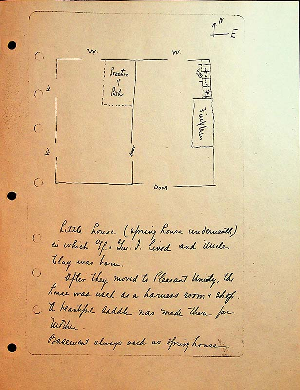

{floor plan for spring house, two rooms with one to east and one to west} N and E labeled on compass rose
Location of bed {shown against inside wall in room on western side}
Staircase up {outside wall eastern room}
Fireplace {outside wall eastern room}
Little house (spring house underneath) in which Gf and Gm lived and Uncle Clay was born.
After they moved to Pleasant Unity, the house was used as a harness room and shop. A beautiful saddle was made there for mother.
Basement always used as springhouse.